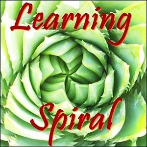
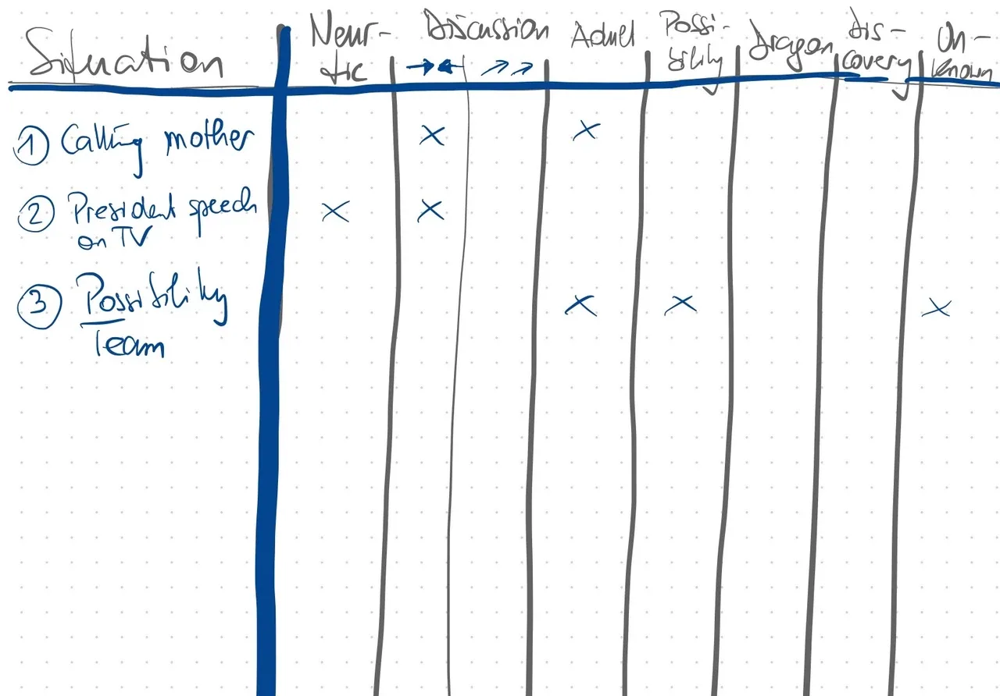
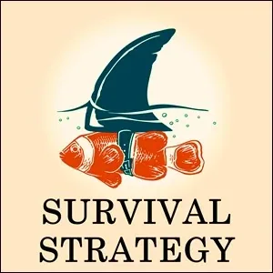
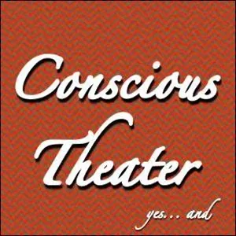

Speakings on Strikingly
[

](http://possibilitymanagement.org/)
NOTICE WHAT KIND OF SPEAKING OTHERS USE
Matrix Code SPEAKING.01
Go with a fellow experimenter to a shopping zone or mall or café and use your powers of noticing to detect what kind of speaking other people do with each other. Estimate what percentage of their time they use which of the kinds of speaking with each other.
Write this down in your Beep! Book as research.
Report what you find out to your Possibility Team.
After completing this experiment , please register Matrix Code SPEAKING.01 in your free account at StartOver.xyz.
This Experiment is worth 1 Matrix Point.
[
](http://possibilitymanagement.org/)
NOTICE WHAT KIND OF SPEAKING YOU USE
Matrix Code SPEAKING.02
Ask a fellow experimenter to follow you around for an entire day and to use their powers of noticing to detect what kind of speaking you do with other people. Have them estimate what percentage of you time you use with each of the kinds of people you interact with.
Write this down in your Beep! Book as research.
Report what you find out to your Possibility Team.
After completing this experiment , please register Matrix Code SPEAKING.02 in your free account at StartOver.xyz.
This Experiment is worth 2 Matrix Points.

PRACTICE NORMAL NEUROTIC SPEAKING
Matrix Code SPEAKING.03
Find a person prone to go into unconscious neurotic speaking with you. Use one of the standard topics to enter a conversation with her/him: wheather, environment, politics, sports, fashion, ...
Observe your vis-a-vis in regard to her / his main purpose of talking: catching attention, feeling important, fear of silence, emotional joy of talking for its own sake, be right, ....
Experiment with changing your own purpose of talking: see what happens when you disagree with the other person / pathetically agree with / go nonlinear & mix in crazy assumptions / explanations of trivial things ("maybe the prime minister's wife is a spy of an extraterrestrial country")
Write this down in your Beep! Book as research.
Report what you find out to your Possibility Team.
After completing this experiment , please register Matrix Code SPEAKING.03 in your free account at StartOver.xyz.
This Experiment is worth 1 Matrix Point.
[
](http://9gaps.mystrikingly.com/)
PRACTICE BOTH KINDS OF DISCUSSION
Matrix Code SPEAKING.04
Discussion can either be Normal Neurotic Speaking (etymological latin "discutere" = smash, shatter, split, blast) or Adult Speaking, depending on the Context of the Gameworld, and the Spaceholder of the conversation.
Find somebody to discuss a more controversial matter (assisted suicide, vaccinations, ..).
Start the conversation with normal neurotic speaking.
Before getting mutually hooked, invite the other person to try another mode of discussing: adult speaking. Explain to her, what the main differences are (= explore each others point of view instead of hammering home the own point of view).
After completing this experiment , please register Matrix Code SPEAKING.04 in your free account at StartOver.xyz.
This Experiment is worth 1 Matrix Point.

PRACTICE ADULT SPEAKING
Matrix Code SPEAKING.05
Adult speaking is best used for things already known. Adult speaking creates a basis of integrity, respect and connection.
Choose a communication first with people that you know and consciously practice this elements of adult speaking:
1) pass on cognitive information 2) share your emotions and feelings 3) make distinctions 4) declare things 5) ask for something 6) (dis-)agree on something 7) set borders.
Go into more dangerous situations with people you feel fear or anger towards. Practice these 7 elements accordingly.
What has been difficult to stay in adult mode ? In case strong emotions came up, you probably have gone on the hook or have been triggered. Find out more about reactivity
Write this down in your Beep! Book as research.
Report what you find out to your Possibility Team.
After completing this experiment , please register Matrix Code SPEAKING.05 in your free account at StartOver.xyz.
This Experiment is worth 1 Matrix Point.
[

](http://possibilityspeaking.mystrikingly.com/)
PRACTICE POSSIBILITY SPEAKING
Matrix Code SPEAKING.06
Possibility Speaking is far more than brainstorming. You have your BRIGHT PRINCIPLES (and ideally your Archetypal Lineage) activated and offer your service to somebody, who may experience a limitation in thinking or acting by his BOX.
You have minimum 10% of anger at disposal and speak before you think out of the bright principle of the unknown. You create distinctions, new perspectives and linear / nonlinear possibilities
Phase 1: Ask somebody familiar for a chance to practice. Ask her, if there is a thing in her life, that she is struggling with. Then ask: "Do you want to hear possibilities?"
Phase 2: Be aware of the conversations around you. When you notice somebody being stuck at something or obviously picking a poor choice, you can ask him: "Do you want to hear other possibilities?"
After completing this experiment , please register Matrix Code SPEAKING.06 in your free account at StartOver.xyz.
This Experiment is worth 1 Matrix Point.
[

](http://dragonspeaking.strikingly.com/)
PRACTICE DRAGON SPEAKING
Matrix Code SPEAKING.07
Dragon speaking requires all your bodies. It is demanded when time requires a massive change and people need to wake up and form an extraordinary creative team.
Start with yourself. Think of a project or a challenge ahead. Speak - in a loud voice - to your inner team including the GREMLIN , firing up all energies in favour of fulfilling the mission. Clarify purpose and clearly point out the need to act.
Think about a situation in your social or professional life, that you are unhappy with for some time or where the time is mature to make a big next step. Prepare your colleagues / friends for a dragon speech and your wish to get feedback afterwards. Set a time-frame of 3-10 minutes. Then send your messages directly into the being of your team.
Notice if you speak from the space of your bright principles (Am I clear? Do I speak from the space of transformation?) or from your Box / Gremlin ("Am I good? Do I impress my team?).
After completing this experiment , please register Matrix Code SPEAKING.07 in your free account at StartOver.xyz.
This Experiment is worth 1 Matrix Point.
[

](http://discovering.mystrikingly.com/)
PRACTICE DISCOVERY SPEAKING
Matrix Code SPEAKING.08
You need a team and a common desire for totally new answers to real questions of real people. You are committed to access new previously unfamiliar territory. As a Space Holder you guide your colleagues into the sphere of their own geniuses using all the energetic space holding tools.
Experiment: first briefly explain to your team about the purpose and process of Discovery Speaking and let them sit or stand in a circle. The topic to discover is:
How can we as (family / team / organization / ...) thrive in connection and productivity?
Navigate the process so that the people build on the statements of each other and get mutually encouraged to go far beyond the limit of the known.
Variation: let your collegues express all kinds of real future concerns and challenges - pick the strongest one.
After completing this experiment , please register Matrix Code SPEAKING.08 in your free account at StartOver.xyz.
This Experiment is worth 1 Matrix Point.
[

](http://speakfromtheunknown.mystrikingly.com/)
PRACTICE SPEAKING FROM THE UNKNOWN
Matrix Code SPEAKING.09
Possibility speaking come out of the bright principle of possibility. Speaking from the Unknown taps into a completely different space of nothingness where you are serving as channel for unheard and unseen messages.
Find a partner to sit opposite to you. He will ask you the question: "What is my innocent true essence seen from a galactic being?"
Do not even think of an answer but immediately start to speak. No break longer than 3 seconds. Speak words that come regardless if they make sense, are mysterious, sound stupid, etc. You are first cleaning out the sediments of normality from your system, before immediate information from the space of nothingness can get through.
After completing this experiment , please register Matrix Code SPEAKING.09 in your free account at StartOver.xyz.
This Experiment is worth 1 Matrix Point.
[
](http://possibilitymanagement.org/)
MAKING YOUR SPEECH CONSCIOUS
Matrix Code SPEAKING.10
Take 7 inches of duct tape, put it over your mouth the moment you wake up in the morning, don't take it off until you go to bed at night, put a hole in the duct tape so you can drink from straw.
Don't speak all day. Every time you have the impulse to speak, write down which kind of speaking you were going to generate. All day long. This makes your speaking conscious.
For people who want to eat, make a not speaking tag.
After completing this experiment , please register Matrix Code SPEAKING.10 in your free account at StartOver.xyz.
This Experiment is worth 1 Matrix Point.
[

](http://possibilitymanagement.org/)
TAKE A STAND THROUGH YOUR SPEAKING
Matrix Code SPEAKING.11
For the whole day, speak out loud, saying the purpose of what you're going to say before you say it.
Get aware of your purpose.
Example: I will say something right now in order to connect with you and set a border. You have taken my bike for the shopping without asking. This has unexpectedly caused me to pay 10 Euros for a taxi for coming to an urgent date.
After completing this experiment , please register Matrix Code SPEAKING.11 in your free account at StartOver.xyz.
This Experiment is worth 1 Matrix Point.
[

](http://possibilitymanagement.org/)
ANSWER IN THREE DIFFERENT WAYS
Matrix Code SPEAKING.12
Answer a question asked to you in 3 different ways. Speak at the level of attention, to speak so that the level of attention changes in the person.
The first thing you say is 'fine' when someone else asks how are you.
Then say two other things to deepen the level of attention.
Example: Question is "How are you?"
Answer 1: "Fine, thank you for asking."
Answer 2: "I feel a little dizzy since two days." (body)
Answer 3: "You seem to burst of energy now." (noticing)
Do that for three days. Write this down in your Beep! Book as research.
After completing this experiment , please register Matrix Code SPEAKING.12 in your free account at StartOver.xyz.
This Experiment is worth 1 Matrix Point.
[
](http://possibilitymanagement.org/)
BULLHORN
Matrix Code SPEAKING.13
Rent or borrow a battery-powered megaphone, bullhorn. One day a week for the next three weeks, only speak through the bullhorn. Be careful about what you say, because it's loud and disruptive.
Before you talk, say your purpose. "My purpose is to make a proposal. My proposal is you pass me the salt."
The pupose of this experiment is to stop pretending that people cannot hear you, that people are not seeing you.
Heal from not being heard by speaking in a bullhorn.
After completing this experiment , please register Matrix Code SPEAKING.13 in your free account at StartOver.xyz.
This Experiment is worth 2 Matrix Points.
[

](http://possibilitymanagement.org/)
WRITE ABOUT EVERY SPEAKING
Matrix Code SPEAKING.14
For a full day, never let your beep book leave your body. Every time you speak, write down what kind of speaking you were doing, and what was the purpose of it.
Write an article about it.
After completing this experiment , please register Matrix Code SPEAKING.14 in your free account at StartOver.xyz.
This Experiment is worth 1 Matrix Point.
[

](http://possibilitymanagement.org/)
SPEAKING DETECTIVE
Matrix Code SPEAKING.15
Write down what you hear other people say and what kind of speaking it is. Use any kind of speaking, in the real world, in TV, in films, on telephone.
Make a table in your Beep! Book with 8 rows. Make a kind of inventory of all the speakings you witness and take part in.
Do this for one week and your accuracy of noticing different qualities of speaking will be massively improved.
After completing this experiment , please register Matrix Code SPEAKING.15 in your free account at StartOver.xyz.
This Experiment is worth 1 Matrix Point.
[

](http://metaconversation.mystrikingly.com/)
TRANSFORMATIONAL SPEAKING IN META-CONVERSATION
Matrix Code SPEAKING.16
For one entire week, every time you speak, use Transformational Speaking.
Everything you say is a meta-conversation.
Everything you say is a transformational proposal.
Everything you say is a negotiation.
Everything is a doorway.
Absolutely refuse to stay in the space of everybody else's conversation.
Every time blow out of that space into the next space.
Do this until you are no longer a victim of the circumstance of any space at all. No longer a victim of hierarchy.
After completing this experiment , please register Matrix Code SPEAKING.16 in your free account at StartOver.xyz.
This Experiment is worth 2 Matrix Point.
[

](http://possibilitymanagement.org/)
BECOME A HEARD OF DRAGON
Matrix Code SPEAKING.17
Have you ever heard of dragons? This is a whole herd of dragons.
All day long do dragon speaking. Do not do anything other than dragon speaking. DO it until people beg you to shut up and do it somewhere else. Until people's beep books are full.
Notice how different times that the dragons speak, it comes from different place. This s a whole herd of dragons inside you. Getting to know your herd of dragons. Give them each a name. Morgantroid. Gandalf. Cedar.
In your beep book write down the name of the dragons and their caracteristics. Get to know your parts.
After completing this experiment , please register Matrix Code SPEAKING.17 in your free account at StartOver.xyz.
This Experiment is worth 1 Matrix Point.
[

](http://possibilitymanagement.org/)
WILDLY SPEAKING POSSIBILITIES
Matrix Code SPEAKING.18
For 3 days, every time somebody says something, assume they're asking for possibility. "Fantastic, you're asking for possibility."
For the next 3 days you are not offering it for free anymore. "I will give you extremely valuable possibilities in exchange for 6 Euros/Dollars.". You can design even vouchers in that amount and offer it as a part of paying the bill at the supermarket cashier.
After completing this experiment , please register Matrix Code SPEAKING.18 in your free account at StartOver.xyz.
This Experiment is worth 2 Matrix Points.
[

](http://speakfromtheunknown.mystrikingly.com/)
SPEAK ONLY WHEN YOU DON'T KNOW WHAT YOU'RE GOING TO SAY NEXT
Matrix Code SPEAKING.19
Avoid speaking from knowing. Each time that you know that you're going to say something. Everytime you don't know what to say, start speaking. Speak something that makes sense, tell them something they need to hear. Speak it before. Everytime you don't know what you're going to say.
Do that for two days with at minimum 15 occasions.
After completing this experiment , please register Matrix Code SPEAKING.19 in your free account at StartOver.xyz.
This Experiment is worth 1 Matrix Point.
[

](http://survivalstrategy.mystrikingly.com/)
FEEL THE PAIN OF NEUROTICISM
Matrix Code SPEAKING.20
Consciously almost only do neurotic speaking. Not in a theatrical way. In a way that is true. Dig into your own. Interrupt someone. Enter conversations that are not for you. You want to speak everywhere. You want to be heard everywhere. Do it even when it's too painful.
Make notes of different ways that people have to defend themselves of your neurotic speaking.
Hint: not all neurotic speaking is speaking. Writing messages on your phone while someone is speaking is neurotic. Energetically vacating.
Do this for one day.
After completing this experiment , please register Matrix Code SPEAKING.20 in your free account at StartOver.xyz.
This Experiment is worth 1 Matrix Point.
[
](http://discovering.mystrikingly.com/)
NOTICE WHAT EACH SPEAKING INVOKES IN THE SPACE
Matrix Code SPEAKING.21
For 5 days, go where you observe other people speaking in the space. With a team. It causes all kinds of phenomenons: confusion | low drama | resistance | intimacy | tension | con-nection.
See the impact of the speaking. 5 days for at least one hour, with a team to do this in a place where people are speaking. What is it creating in the space?
After completing this experiment, please register Matrix Code SPEAKING.21 in your free account at StartOver.xyz.
This Experiment is worth 1 Matrix Point.
[
](http://gapinknowing.mystrikingly.com/)
7 cards speaking
Matrix Code SPEAKING.22
Create 7 paper cards, each for one of the kinds of speaking. Carry them around the whole day. IF you get the impulse to speak, pick a card, say what you have the impulse to say with that kind of speaking. Write down how it goes in your beep book.
Ask the person how it went for them. It doesn't mean anything what people think. This is research.
After completing this experiment , please register Matrix Code SPEAKING.22 in your free account at StartOver.xyz.
This Experiment is worth 1 Matrix Point.
[
](http://howtogiveaworkshop.mystrikingly.com/)
DRAGON SPEAKING WORKSHOP
Matrix Code SPEAKING.23
Do a workshop called Dragon Speaking.
In the workshop, discover, use the group intelligence to go on this journey that's close to your heart. Don't tell people beforehand. This time, just give a discovery speaking workshop. Have your scribe and timekeeper and walker. Walker keeps walking around the room to keep the energy stirred up. The speaking is about something that is close to you.
Create a space that makes it unprobable for people to get sucked into a gremlin feeding frenzy. And in case it still happens to get sucked into, find out, how you can renavigate the group out of there.
Document it, have someone making a film to that the whole thing is recorded. Adds a level of importance to the discovery journey. It's being recorded. Make the extra credit to publish the video on youtube or something.
After completing this experiment , please register Matrix Code SPEAKING.23 in your free account at StartOver.xyz.
This Experiment is worth 3 Matrix Points.
[
](http://culturetoculture.mystrikingly.com/)
UNCONSCIOUS CULTURAL SPEAKING LAYERS
Matrix Code SPEAKING.24
Unconscious cultural speaking has different layers.
layer 1: next time you talk to your mother, take notes, pay attention to the sentence "Idioms" that she is using, the kind of words, when she interrupts, when she doesn't speak, words she is frequently using. Write down which one you have taken in your vocabulary and not got rid of them.
layer 2: do it with the people you live with, your children, your wife/husband.
layer 3: do that with whole cultures: check your own culture. Check how Americans speak that makes them stuck in the american verbal experience of the world. (To do this you have to exit america because there is so much unconscious.)
Watch movies from other cultures in english, notice what keeps coming back. What is in their vernacular. Not dubbed. English speaking indian movie. English speaking New Zealand movie.
Write a one page research paper of your findings.
After completing this experiment , please register Matrix Code SPEAKING.24 in your free account at StartOver.xyz.
This Experiment is worth 1 Matrix Point.
[
](http://archetypaldomains.mystrikingly.com/)
SPEAKING IN THE ARCHETYPAL DOMAIN
Matrix Code SPEAKING.25
Archetypes are fueled by the energy of Feelings. Anger fuels the Responsible Doer (Warrior / Warrioress) or the Irresponsible Persecutor. Sadness fuels the Responsible Communicator (Lover) or the Irresponsible Victim. Fear fuels the Responsible Creator (Magician / Sorceress) or the Irresponsible Rescuer. And gladness fuels the Responsible Adult (King Man / Queen Goddess Woman) or the Irresponsible Gremlin.
The archetypal speaking happens in all 5 bodies. Check the list of films here and watch at least 10 of them with this focus:
What kind of speaking do you find in the discovery of the main characters archetypal lineage? Distil core scenes and write an article or two about that.
Give a work-talk about that.
Wonder Woman | The Wizard of Oz | John Carter | Sorcerer's Apprentice | As Good As It Gets | Accepted | Willow | The Magic of Belle Isle | | The Mask of Zorro | Batman Begins | The Physician | Galaxy Quest | Fight Club | Don Juan de Marco
After completing this experiment , please register Matrix Code SPEAKING.25 in your free account at StartOver.xyz.
This Experiment is worth 2 Matrix Points.
[
](http://creation.mystrikingly.com/)
ANIMAL SPEAKING
Matrix Code SPEAKING.26
Part 1 -
Choose 7 animals from this list (snake, walrus, elephant, kangarou, buffalo, beaver, bear, wolf, hawk, donkey, shark). Go through the list. Each person you speak to you speak with the next kind of animal. Body language, accent, speak like the animal no matter what people say.
Part 2 -
Animal shouting - Go through the list, all day. People ask you what you are doing. Then you tell them that you are doing animal shouting.
After completing this experiment , please register Matrix Code SPEAKING.26 in your free account at StartOver.xyz.
This Experiment is worth 1 Matrix Point.
[

](http://conscioustheater.mystrikingly.com/)
MAKING COMMANDS
Matrix Code SPEAKING.27
For the whole day, make commands only. The only thing you say all day long. Direct people around you. Shortest words possible. If they ask questions, still give them commands as answers.
Example:
"What time is it?"
"Time for you to get a watch."
Do not use 'should', 'must', 'need', 'we'.
Start with a verb or please.
After completing this experiment , please register Matrix Code SPEAKING.27 in your free account at StartOver.xyz.
This Experiment is worth 1 Matrix Point.
[

](http://disillusionment.mystrikingly.com/)
TRANSFORMATIONAL SPEAKING IN DISTINCTIONS
Matrix Code SPEAKING.28
Answer only with distinctions into the matrix of the people.
Main distinctions: emotion - feeling, radical responsibility, ego states, negotiation, intimacy, bright principles - shadow principles, 5 bodies, ...
After completing this experiment , please register Matrix Code SPEAKING.28 in your free account at StartOver.xyz.
This Experiment is worth 1 Matrix Point.